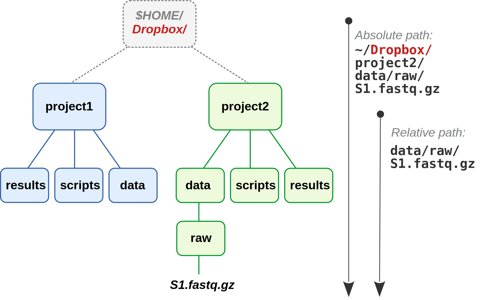
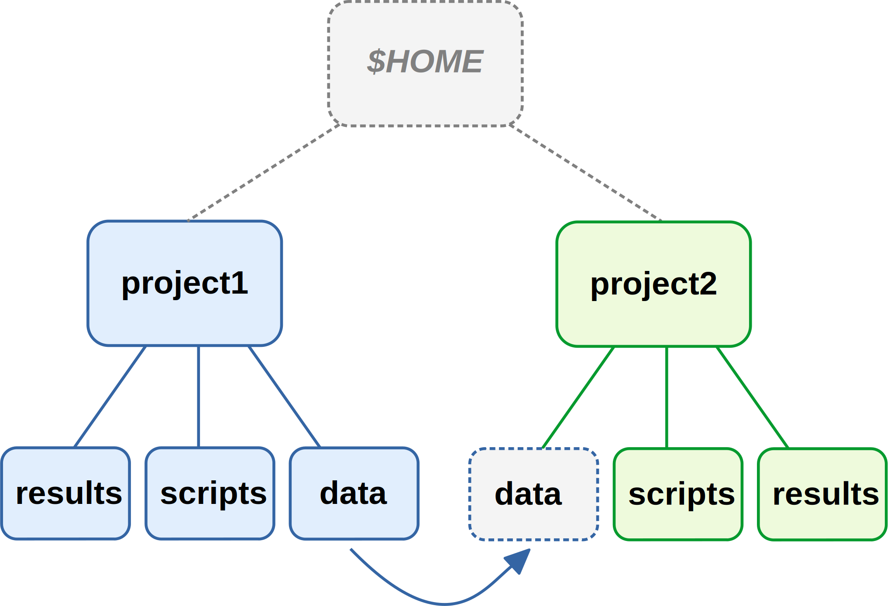
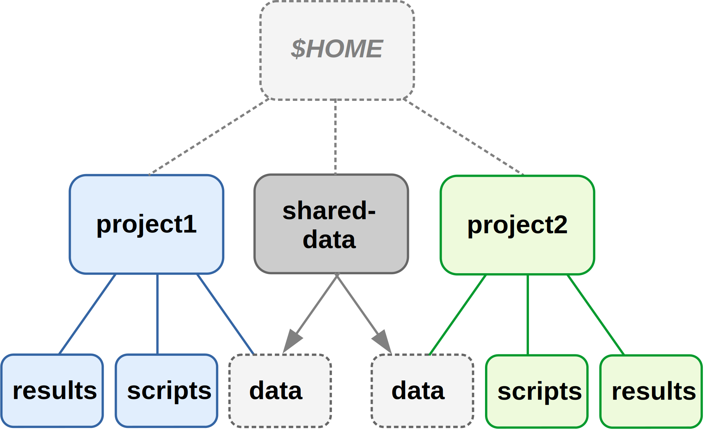
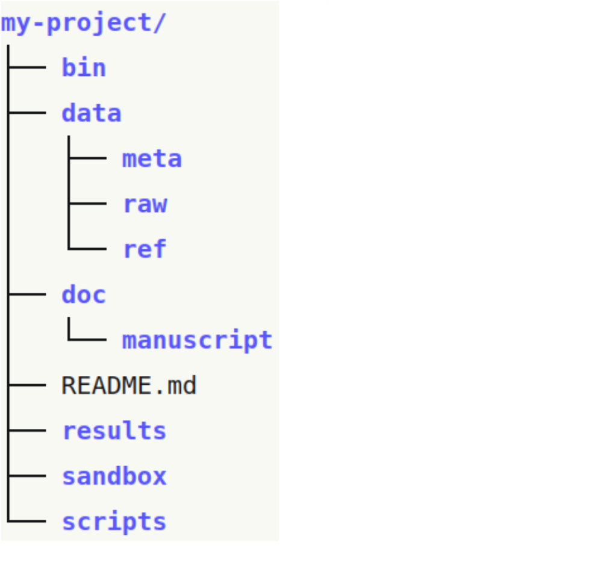
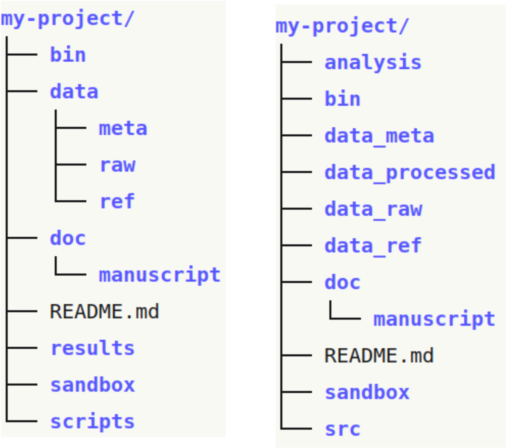

Project organization
Week 2 - Part I
1 Overview of this week
- This presentation:
- Learn some best practices for project organization, documentation, and management.
- Also today: VS Code and Markdown
- Get to know our text editor, VS Code, a bit better.
- Learn how to use Markdown for documentation (and beyond).
- [Third slide deck (Thursday)]((https://mcic-osu.github.io/pracs-sp21/posts/week-02/slides/02-3-md.html):
- Learn how to manage files in the Unix shell.
1.1 Importance of good project organization
Good project organization and documentation facilitates:
- Collaborating with others (and yourself in the future…)
- Reproducibility
- Automation
- Version control
In short, it is a necessary foundation to use this course’s tools and to reach some of its goals.
2 Project organization – some underlying principles
2.1 One dir hierarchy for one project
In other words:
- Don’t keep multiple distinct projects inside one dir.
- Don’t keep files for one project in multiple places.
Within the dir hierarchy:
- Separate code from data
- Separate raw data from processed data
Also: - Treat raw data as read-only (and treat generated output as disposable). - Use good dir and file naming. - Slow down and document.
When you have a single directory hierarchy for each project, it is:
- Easier to: find files, share your project, not throw away stuff in error, …
- Possible to use relative paths within a project’s scripts => more portable.



2.2 Absolute versus relative path recap:
- Absolute paths start from the root directory, break when moving a project, and don’t generally work across computers.
- Relative paths start from a working dir: when you always use the root of the project as the working dir, paths work when moving the project within and between computers.
2.3 But how to define and separate projects?
From Wilson et al 2017 - Good Enough Practices in Scientific Computing:
As a rule of thumb, divide work into projects based on the overlap in data and code files.
If 2 research efforts share no data or code, they will probably be easiest to manage independently.
If they share more than half of their data and code, they are probably best managed together.
If you are building tools that are used in several projects, the common code should probably be in a project of its own.
2.4 Projects with shared data or code
To access files outside of the project (e.g., shared across projects),
it is easiest to create links to these files:

But shared data or scripts are generally better stored in separate dirs,
and then linked to by each project using them:

These strategies do decrease the portability of your project,
and moving the shared files even within your own computer
will cause links to break.
A more portable method is to keep shared (multi-project) files online –
this is especially feasible for scripts under version control:

For data, this is also possible but often not practical due to file sizes. It’s easier after data has been deposited in a public repository.
3 Example project dir structures


Several things depend on preferences and project specifics:
dataas single top-level dir?
resultsvsanalysis(Buffalo)src(source) vsscriptsvsworkflow- Where to put figures –
results/plots/qcorresults/qc/plots/?
Other best practices:
- Use subdirectories liberally (e.g. within
analysis,scripts). - Also add READMEs within dirs.
4 File naming
Three principles for good file names (Jenny Bryan):
- Machine-readable
- Human-readable
- Playing well with default ordering
Machine-readable
Consistent and informative naming helps to programmatically find and process files.
In file names, provide metadata like Sample ID, date, and treatment:
sample032_2016-05-03_low.txt
samples_soil_treatmentA_2019-01.txt
Now, you can use globbing to select samples from a certain month or treatment (more about this on Thursday):
ls *2016-05* ls *treatmentA*
Suffices, like .txt, .md, and .csv are generally not necessary in Unix, but are still useful to distinguish file types easily and programmatically.
Spaces in file names lead to inconvenience or trouble:
mkdir "raw sequences" mkdir sequences rm -rf raw sequencesMore generally, only use the following in file names:
- Alphanumeric characters A-Za-z0-9
- Underscores _
- Hyphens (dashes) -
- Periods (dots) .
Human-readable
“Name all files to reflect their content or function. For example, use names such as bird_count_table.csv, manuscript.md, or sightings_analysis.py.”
Wilson et al. 2017
Combining machine- and human-readable
One good way (opinionated recommendations):
- Use **underscores _ to delimit units** you may later want to separate on (extract with
cut, etc.): sampleID, batch, treatment, date. - Within such units, use dashes - to delimit words:
grass-samples. - Limit the use of periods . to indicate file extensions.
- (Generally avoid capitals.)
- Use **underscores _ to delimit units** you may later want to separate on (extract with
For example:
mmus001_treatmentA_filtered-mq30-only_sorted_dedupped.bam mmus002_treatmentA_filtered-mq30-only_sorted_dedupped.bam . . . mmus086_treatmentG_filtered-mq30-only_sorted_dedupped.bam
Ordering
Use leading zeros for lexicographic sorting:
sample005.Dates should always be written as
YYYY-MM-DD:2020-10-11.Can group similar files together by starting with same phrase,
and number scripts according to their execution order:DE-01_normalize.R DE-02_test.R DE-03_process-significant.R
5 Slow down and document
Use README files to document:
- Your methods
- Where/when/how each data and metadata file originated
- Versions of software, databases, reference genomes
- …Everything needed to rerun whole project
See this week’s Buffalo chapter (Ch. 2) for further details.
For documentation, use plain text files
Plain text files offer several benefits over proprietary & binary formats (like .docx and .xlsx)1:
- Can be accessed on any computer, including over remote connections
- Are future-proof
- Allow to be version-controlled
Footnotes
These considerations apply not just to files for documentation, but also to data files, etc!↩︎